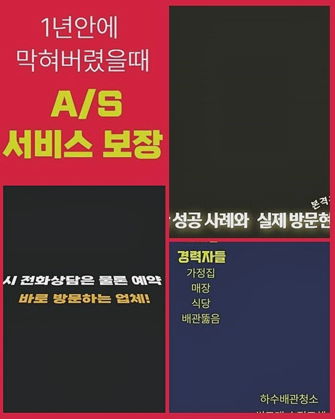
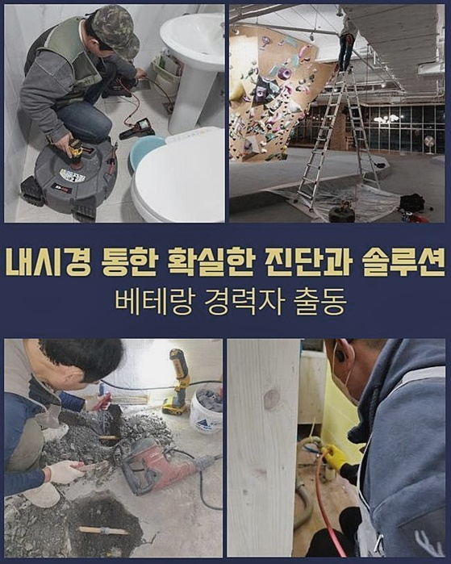
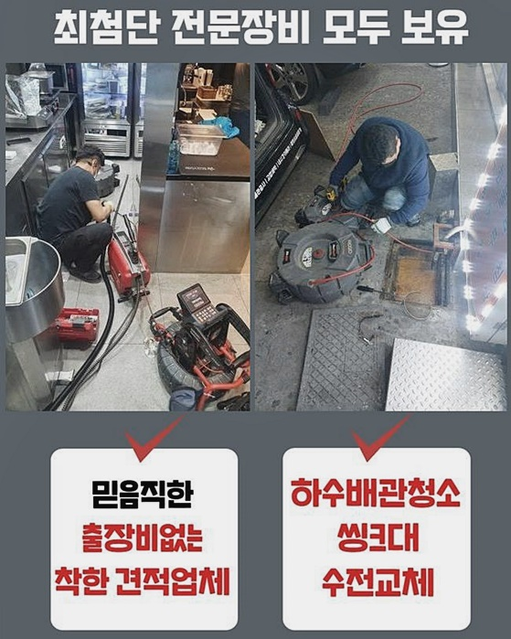
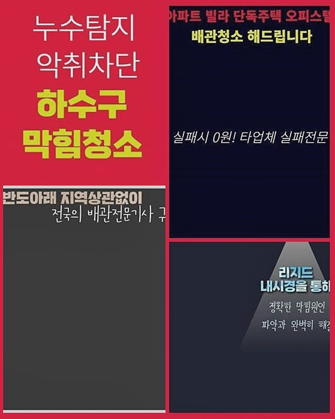
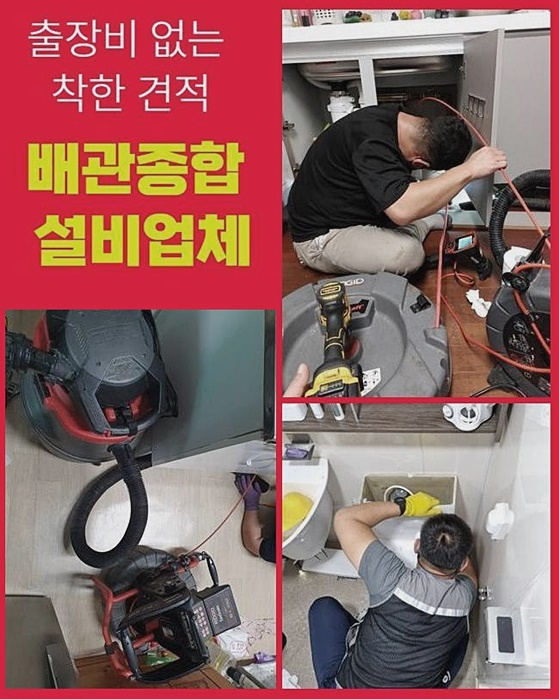
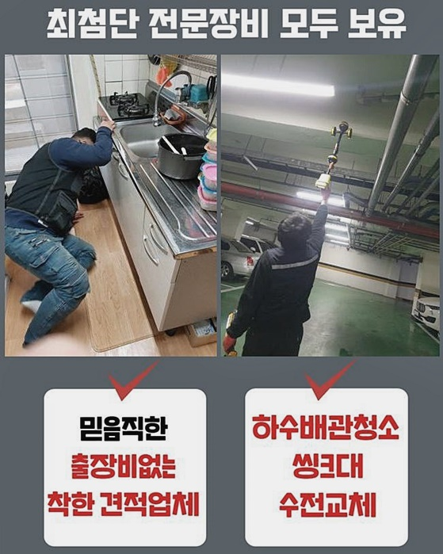
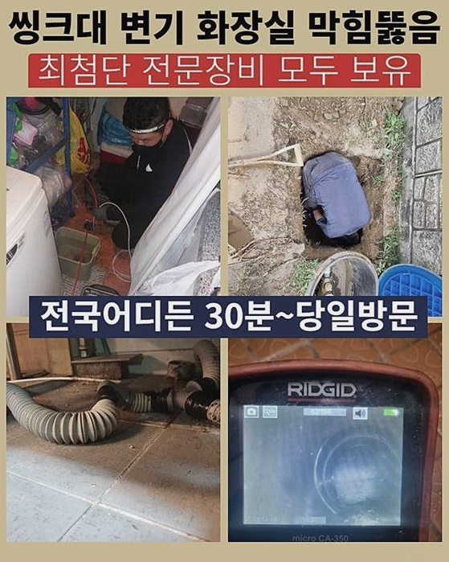

🏠 안성 계동싱크대뚫음 발화동 오수맨홀청소 수리업체
안성 싱크대막힘 전문 시공 후기

📋 작업 개요
- 위치: 안성
- 서비스 유형: 싱크대막힘, 변기막힘, 하수구막힘, 배관막힘, 맨홀막힘, 뚫는업체, 배관청소, 고압세척, 배관보수
- 작업 일시: 2024. 7. 3. 16:50
- 업체명: 하수구수사대 (010-5615-2118)
🔍 문제 상황
안성 계동싱크대뚫음 발화동 오수맨홀청소 수리업체
금일은 배수구에 문제가 발생시 전문인 결정방법에 관해 알려드릴게요
기술자 선정 시에 생각해야하는 부분은 전문가의 하수도막힘 변기 배수관막힘의 숙련도와 신뢰도입니다
배수관의 문제점은 빠르고 확실한 조치들이 필수라서 기술적인 지식들과 노하우가 있는 기술자를 선택해야합니다
다른기준은 비용과 보수가능 영역을 살펴봐야합니다
수리의 완성도와 정비비용은 중요하더라도 더많은 서비스들이나 AS조건들을 생각해서 전반적인 비용들을 검토하는 것이 요구됩니다
끝으로 타 고객들의 리뷰들과 만족도를 검토하는게 도움될 수 있습니다
타 고객들의 이용기를 근거로 전문기사의 정비 퀄리티와 숙련도를 확인할 수 있고 이과정을 통해 더욱 현명한 판단을 할수 있어요
그러니까 하수도막힘 이슈가 생겼을 때 적합한 하수배관막힘 화장실 오수관막힘 숙련된 수리기사를 선정하려면 이런 항목들을 고려하여 선정하는 것이 요구됩니다
하수관로의 문제점을 살펴보고 관속을 분석하고 진행하는 동안 적절한 대응을 하여 문제점을 고쳐나가며 의뢰자의 불편함을 해결하기 위해 성심껏 노력할 것입니다
우리의 방식은 체계적이며 여러 사례와 기술력으로 의뢰자의 어려움을 해결할 것을 보장해드리겠습니다
찌꺼기들이 다수 쌓인 지점에는 고압력 세척을 했으며 썩션장비를 이용하여 주요 장애요인을 제거하였습니다
그 이후 고급장비를 활용하여 침착물과 미세불순물들을 고압으로 제거했습니다
이런작업을 통하여 문제 처리가 가능했으며 손상방지를 위해 규칙적인 클리닝이 필요함을 알려드려요

🔎 원인 분석
💡 전문가 진단: 정밀 진단 장비를 사용하여 슬러지의 고착 여부를 판명하고 타격/세척 작업을 실시했습니다.
방관하면 더 심한 문제상황이 생길수 있어서 규칙적인 세척이 도움될 수 있습니다
그러므로 저희업체는 작업스케줄을 특정하지 않아 늦은 저녁이라도 대응할 수 있도록 대비를 하고 있습니다
다음순서로 저희전문가가 처리한 사례는 이른 아침에 일어난 배수문제 때문에 욕실에 들어갔을때 냄새가 매우심해서 사안이 심각하다는 점을 직감했습니다
수리를 할때는 알맞은 힘으로 깨뜨리는 공정을 실시해서 오물들을 정밀하게 갈아내고 석션기기를 이용해 신중히 흡입해줍니다
이런식으로 반복해서 불순물을 없애는 과정들을 끝낸후에는 내시경장비를 집어넣어 배수관 안쪽을 세밀하게 검사합니다
깨끗해진 하수관 안쪽 점검 결과들을 이용자에게 알리고
마지막으로 양변기에 물을 꽉 채운 후 물빠짐 검사를 해보고 물배출이 잘 되는지 살펴봅니다
면밀하게 과정을 진행하여 막힌하수관의 문제들을 처리했습니다
화장실 세면대에 배관막힘 현상이 나타나면 계획에 차질을 발생시킬 수 있죠
이런 경우에는 사유를 조사하고 신속히 해결을 해야해요 그런데 사유를 분석하여 바로 잡는 것은 만만치 않습니다
그래서 배수관막힘 전문인의 도움이 필수적입니다
저희전문가들은 여러가지 기구와 장비들을 동원하여 오물들을 없애고 하수구 청소작업을 실행했어요
석션도구 청소장비 파쇄기등을 활용하여 불순물을 제거해드리고 하수관 속을 세척했어요
먼저 수도꼭지를 틀어서 배수장애 현상들을 점검했고 상세히 사태를 확인했어요

🔧 작업 과정
타 업체에서 찾아왔었지만 해결이 안되어 우리에게 의뢰를 요청하셨다는데
우리업체는 수리에 실패하게 되면 수리비를 요구하지 않는 방침들을 적용하기 때문에 마음놓으셔도 괜찮습니다
효과적으로 완료한후에는 원하실 때 무비용으로 애프터서비스를 이용가능하도록 도움을 드리고 있어요
막힌하수관의 문제들은 욕실 이용에 불편을 주게되고 일정에 큰 불편을 초래할 수 있어요
때문에 긴급한 처리를 해야만 하고 하수관로막힘 변기 배수관막힘 기술자의 도움이 필요로 합니다
우리업체는 소비자의 불편함을 줄이고 원활하게 일정을 지속할수 있게 전력을 다합니다
밤낮없이 지원이 필요하시다면 저희들에게 연락부탁드립니다
연중무휴 상담해드리고 있으며 공휴일 출장 역시 이용하실 수 있습니다
편안한 여건을 만들기위해 열심히 일하는 저희전문팀과 함께하셔서 염려없는 삶을 보내시기 바랍니다
세면기 아래쪽의 부품들을 떼어냈더니 일부 물때들이 발견되었지만 근본적인 이유들은 그것처럼 단순하다고 볼 수 없었습니다
결과적으로 하수관 내부 확인하기 위해 전문기구를 활용해서 배관 내부를 확인하였습니다
확인해보니 배수구 안쪽에 다수의 오물과 비누찌꺼기가 축적되어 있었고 그것이 물배출을 지연시키는 요인이었어요
그런다음 알맞은 소독약이나 클리너를 이용하여 배수관을 청결하게 닦아줬어요
이런 과정들으로 물배출이 잘 이루어지게 조치하였습니다
마지막엔 의뢰인에게 하수관에 미세한 잔여물이나 이물질이 쌓이지 않게 유의사항을 안내했어요
문제들을 해결하려고 내시경기구를 사용하여 배수관 속안을 조사한결과 팔이 닿지 않는 위치에서 석회성분이 견고하게 굳어있는 상황을 발견하게 되었습니다
석회성분은 다양한 불순물이 축적되고 뭉쳐져 하수도를 둘러싸는 성분들로 그대로두면 하수관을 막아버리거나 배수구고장을 유발합니다
결과적으로 석회덩어리를 정리하려 했으며 실행을 위해서 플렉스샤프트 기구를 활용하였습니다
이 기구를 이용하여 석회성분을 작게 깨고 완벽하게 정리해서 하수관의 물빠짐을 유지하게 했어요
이방법으로 석회물질들을 제거해서 하수배관막힘 현장의 주요 이유를 처리할수 있었어요
특정상황이 벌어진 이유들을 규명하지 못하면 문제들을 없앨수 없기 마련이라 빠른속도로 상황들을 이해하고 점검했습니다
변기를 떼어내고 배수파이프에 내시경도구를 투입하였더니 배수장애의 요인을 발견할 수 있었습니다


✅ 작업 완료
예전에도 수리했지만 엉켜있는 이물질이 누적되어서 물이 빠지지 않았습니다
이걸 제거하려고 힘썼으며 의뢰자에게 내시경장비로 상태를 보여드리면서 안내했습니다
문제들의 요인을 밝혀내기위해 전력을 다해 힘썼고 어째서 이런일이 생기게 되었는지 알았어요
위와 같은 문제를 예방하고자 하면 주기적인 배수관 정비와 세척이 중요함을 전달했습니다
만족할 수 있는 하수도막힘 화장실 배수로막힘 수리를 제공할 수 있게 성심껏 노력하고 있습니다
이 같은 도움을 지원하는 전문업체를 고르시는 것이 최상의 선택입니다




⚠️ 주방 싱크대 배관 막힘 예방 수칙
- ✅ 기름기가 묻은 식기나 프라이팬은 설거지 전 키친타올로 반드시 기름때를 닦아내세요.
- ✅ 주기적으로 싱크대 개수대에 뜨거운 물을 가득 받아 한 번에 내려 배관 내부 기름을 씻어내세요.
- ✅ 배수구 거름망을 미세한 필터로 사용하시고 음식물 찌꺼기가 틈으로 새어 들지 않게 관리하세요.
- ✅ 베이킹소다와 식초를 뜨거운 물과 함께 일주일에 한 번씩 부어주면 배관 살균과 막힘 예방에 좋습니다.
💡 핵심 정리
- 확실한 장비 작업(내시경 점검 및 샤프트 스케일링)으로 원인을 뿌리 뽑습니다.
- 작업 후 1년 이내에 동일한 부위 재발 시 100% 무상 A/S 서비스를 보장합니다.
- 서울 · 경기 · 인천 전 지역에 24시간 언제든 긴급 출동할 수 있도록 항시 대기 중입니다.
❓ 자주 묻는 질문 (FAQ)
🚨 안성 싱크대막힘 문제로 고민이신가요?
정확한 원인 진단과 확실한 시공으로 재발 없는 해결을 약속드립니다.
24시간 긴급 출동 | 서울 · 경기 · 인천 전지역 | 1년 내 재발 시 무상 A/S